1. Giới thiệu đề tài
Semantic Segmentation là bài toán gán nhãn ngữ nghĩa cho từng pixel của ảnh. Bài thực hành này xây dựng một pipeline gồm đọc ảnh và mask, tiền xử lý, huấn luyện mô hình U-Net, đánh giá bằng mIoU/Dice và trực quan hóa kết quả dự đoán.
Mục tiêu là xác định các vùng như đường, xe, người đi bộ, tòa nhà và bầu trời trong ảnh giao thông đô thị.
2. Bộ dữ liệu CamVid
Bộ dữ liệu sử dụng 701 ảnh với 11 lớp có nhãn; các pixel unlabeled được bỏ qua khi tính loss và metrics bằng ignore_index=255.
| Tập | Số ảnh |
|---|---|
| Training | 367 |
| Validation | 101 |
| Testing | 233 |
| Tổng | 701 |
Các lớp: Sky, Building, Pole, Road, Sidewalk, Tree, SignSymbol, Fence, Car, Pedestrian, Bicyclist.
3. Phương pháp và môi trường thực nghiệm
Mô hình U-Net gồm encoder, bottleneck và decoder; skip connections giúp kết hợp đặc trưng ở nhiều mức độ phân giải.
| Mô hình | U-Net |
|---|---|
| Framework | PyTorch |
| GPU | NVIDIA GeForce RTX 3050 Ti Laptop GPU (4 GB) |
| Kích thước ảnh | 256 × 256 |
| Batch size | 2 |
| Epochs | 10 |
| Optimizer | AdamW |
| Learning rate | 0.001 |
| Base channels | 16 |
| Tiền xử lý | Ảnh RGB về [0, 1]; resize ảnh bằng bilinear, mask bằng nearest; chưa dùng augmentation |
| Loss | Cross-Entropy Loss (ignore index 255) |
| Metrics | mIoU, Mean Dice |
4. Kết quả thực nghiệm
Kết quả baseline U-Net sau 10 epochs. Checkpoint được chọn theo validation mIoU cao nhất và đã được đánh giá lại trên toàn bộ 233 ảnh test; số liệu dưới đây được làm tròn đến 4 chữ số thập phân.
Metrics được tính từ confusion matrix cộng dồn trên toàn bộ tập test, bỏ qua pixel nhãn 255 và lấy trung bình trên các lớp có union lớn hơn 0. Dice là chỉ số đánh giá; hàm loss huấn luyện là Cross-Entropy.
Kết quả cho thấy pipeline đã huấn luyện và đánh giá thành công. Đây là baseline để tiếp tục so sánh với UNet++ trong A2.
5. Hình minh chứng thực nghiệm


A2/results/ hoặc A2/images/.6. Mã nguồn, báo cáo và tài liệu
Định hướng A2
So sánh U-Net và UNet++ cho bài toán phân đoạn ngữ nghĩa ảnh giao thông đô thị. UNet++ được đề xuất trong lĩnh vực ảnh y sinh; nghiên cứu dự kiến đánh giá khả năng áp dụng kiến trúc này trên CamVid.
A1.1 — CNN vs Vision Transformer trên PathMNIST
Bùi Tiến Đức · MSSV 2680018
So sánh ResNet-18 và ViT-Base/16 trong phân loại ảnh mô bệnh học; đánh giá ảnh hưởng của pretrained và chiến lược đóng băng backbone.
1. Dataset và EDA
PathMNIST gồm 107.180 ảnh RGB thuộc 9 lớp. Giữ nguyên split được cung cấp. Ảnh lưu trữ 28 × 28 được resize lên 224 × 224 khi đưa vào mô hình.
| Tập | Số ảnh |
|---|---|
| Train | 89.996 |
| Validation | 10.004 |
| Test | 7.180 |
| Tổng | 107.180 |
Nguồn MedMNIST · License dữ liệu: CC BY 4.0.
Dataset có 9 lớp, thấp hơn mức ưu tiên ≥ 10 lớp của đề; lựa chọn gắn với paper tái lập và quy mô dữ liệu lớn. Resize không bổ sung chi tiết ảnh mới.
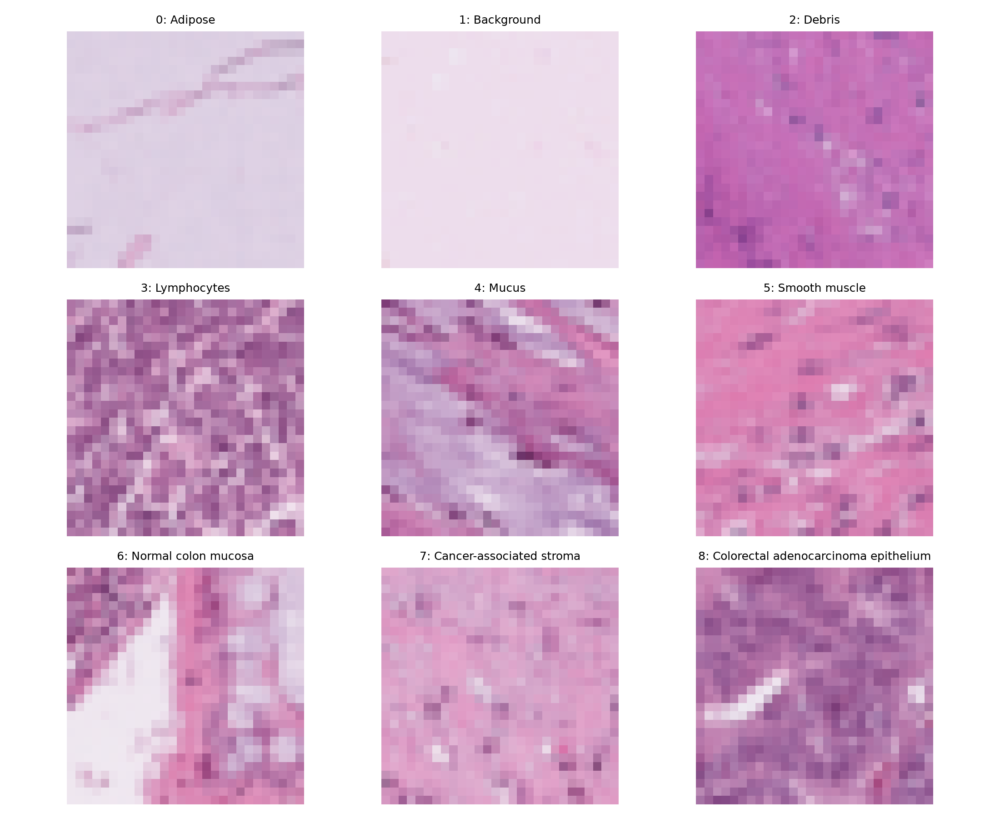
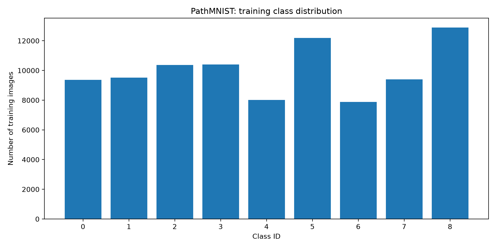
2. Paper nền và phạm vi
Halder, A., Gharami, S., Sadhu, P., Singh, P. K., Woźniak, M., & Ijaz, M. F. (2024). Implementing vision transformer for classifying 2D biomedical images. Scientific Reports, 14, 12567. DOI và bài xuất bản.
Dự kiến tái lập nhánh ViT trên PathMNIST, bổ sung CNN và các chế độ huấn luyện theo yêu cầu A1. Đây là tái lập có giới hạn và mở rộng, chưa phải tái lập toàn bộ paper. Code tác giả.
3. Protocol dự kiến
| Mô hình | ResNet-18 (CNN) và ViT-Base/16 (Transformer) |
|---|---|
| Đầu vào / batch | 224 × 224 RGB / batch size 2 |
| Ngân sách | Dự kiến 10 epochs mỗi cấu hình, chạy lần lượt; chưa khẳng định đủ hội tụ |
| Optimizer / loss | AdamW / CrossEntropyLoss |
| Learning rate | Scratch: 1e-4; head-only: 1e-3; partial/full: 1e-5 |
| Seed dự kiến | 42 |
| Tiền xử lý | Train: resize và lật ngang ngẫu nhiên; validation/test: resize, không augmentation ngẫu nhiên. Normalization theo checkpoint từng mô hình, dùng nhất quán cho bản scratch tương ứng; xác nhận trước thí nghiệm chính. |
| Precision | Mixed precision khi chạy GPU |
| Chọn checkpoint | Validation Macro-F1 cao nhất; không dùng test để chọn cấu hình |
| Đánh giá | Accuracy, Macro-F1, confusion matrix, thời gian, VRAM, số tham số tổng và trainable |
| Chế độ | ResNet-18 | ViT-Base/16 |
|---|---|---|
| From-scratch | Khởi tạo ngẫu nhiên, train toàn bộ | Khởi tạo ngẫu nhiên, train toàn bộ |
| Pretrained: head-only | Chỉ train fc | Chỉ train classifier |
| Pretrained: partial | Train layer4 và fc | Train 2 encoder block cuối, layernorm cuối và classifier |
| Pretrained: full | Fine-tune toàn bộ | Fine-tune toàn bộ |
Protocol chi tiết và preprocessing dự kiến
4. Minh chứng kiểm tra pipeline
Môi trường đã kiểm tra: Python 3.11, PyTorch 2.11.0+cu128, Transformers 4.57.6; GPU NVIDIA GeForce RTX 3050 Ti Laptop GPU. ViT đã chạy thử 20 batch train và 10 batch validation với batch size 2; VRAM đỉnh PyTorch cấp phát khoảng 1,62 GB.
Phép thử chỉ xác nhận pipeline hoạt động. Loss/accuracy trên tập nhỏ không dùng làm kết quả cuối hay so sánh với paper. Phần YOLO Detection là thực hành riêng; xem kết quả fine-tune trên Penn-Fudan.
A1.2 — ResNet-18 head và partial trên PathMNIST
Đã hoàn thành hai cấu hình pretrained, mỗi cấu hình 10 epochs, seed 42. Mỗi checkpoint được chọn theo validation Macro-F1 cao nhất (hòa thì chọn validation loss thấp hơn), sau đó đánh giá trên toàn bộ 7.180 ảnh test.
Phạm vi đã thực hiện: ResNet-18 head và partial. ViT mới kiểm tra pipeline; các cấu hình ViT, scratch và full chưa có thực nghiệm chính thức. Chưa hoàn thành toàn bộ kế hoạch tám cấu hình và chưa có kết luận so sánh CNN–ViT.
Cấu hình và kết quả
Ảnh RGB 28 × 28 được resize bilinear thành 224 × 224, chuẩn hóa theo ImageNet. Train có lật ngang ngẫu nhiên p = 0,5; validation/test không augmentation ngẫu nhiên. Batch size 2, AdamW, weight decay 0,01, CrossEntropyLoss, mixed precision trên GPU. Head chỉ huấn luyện fc; partial huấn luyện layer4 và fc.
| Chỉ số | Head | Partial |
|---|---|---|
| Epochs hoàn thành | 10 | 10 |
| Learning rate | 0,001 | 0,00001 |
| Tham số được huấn luyện | 4.617 | 8.398.345 |
| Best epoch theo validation | 6 | 7 |
| Validation Macro-F1 tốt nhất | 87,22% | 94,06% |
| Test Accuracy | 82,77% | 86,00% |
| Test Macro-F1 | 76,20% | 80,04% |
| Test loss | 0,4933 | 0,6871 |
| Train + validation (phút) | 80,53 | 167,26 |
| VRAM tensor đỉnh PyTorch (GiB) | 0,1169 | 0,2323 |
Partial tăng khoảng 3,23 điểm phần trăm test Accuracy và 3,85 điểm phần trăm test Macro-F1, với thời gian train + validation khoảng 2,08 lần. Learning rate cũng khác nhau, nên kết quả không tách riêng tác động của việc mở thêm layer4. Mỗi cấu hình chỉ chạy một seed, chưa có kiểm định ý nghĩa thống kê.
Validation Macro-F1 cao hơn test khoảng 11,02 điểm ở head và 14,02 điểm ở partial; chưa xác định nguyên nhân từ thí nghiệm hiện có. Partial có test loss cao hơn dù Accuracy/F1 tốt hơn; ảnh minh họa có dự đoán sai với confidence cao, nhưng chưa đánh giá calibration chính thức.
VRAM là đỉnh bộ nhớ tensor do PyTorch cấp phát trong lần train, không phải tổng bộ nhớ GPU. Thời gian gồm train và validation, không bao gồm toàn bộ chi phí khởi tạo và lưu file. Resize không bổ sung chi tiết mới cho ảnh gốc.
Biểu đồ và minh chứng test
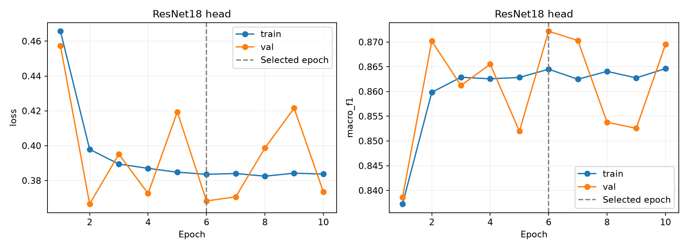
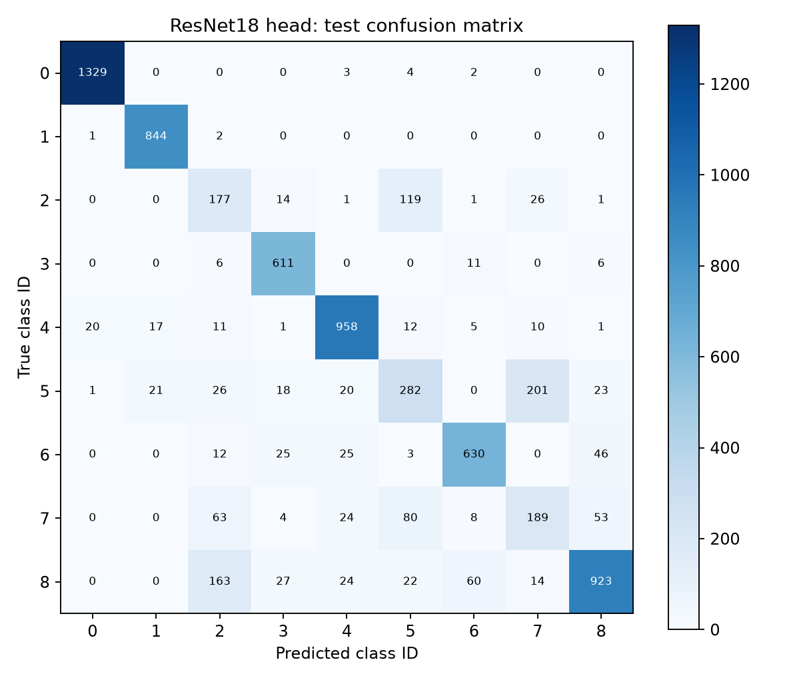
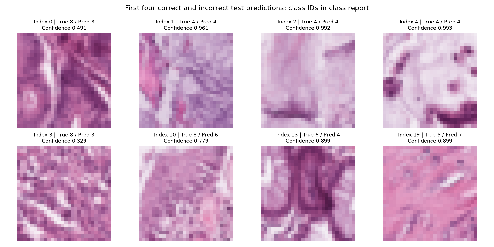
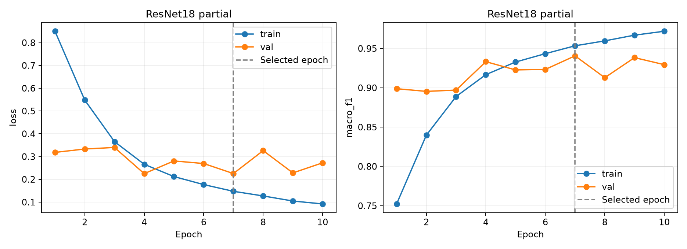
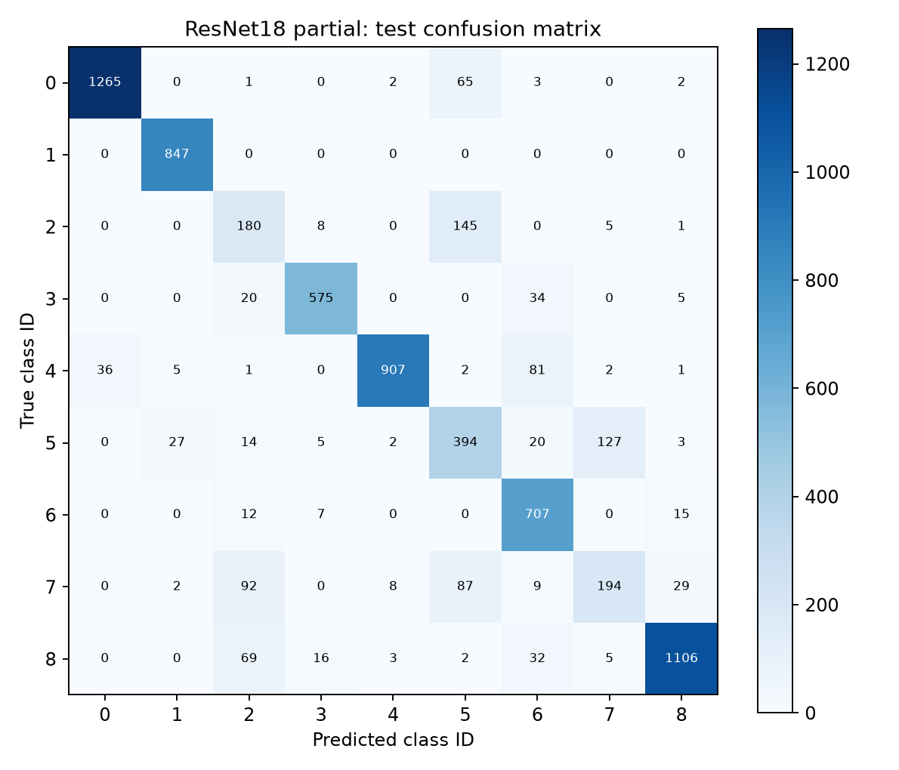
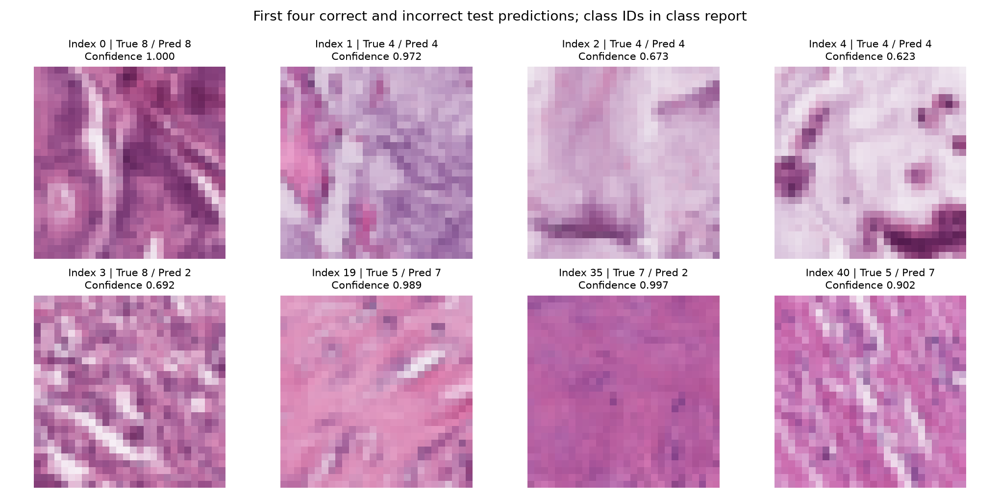
Với partial, các lớp có test F1 thấp gồm Debris (49,45%), Cancer-associated stroma (51,46%) và Smooth muscle (61,23%). Ví dụ test index 19 có nhãn thật Smooth muscle (5), dự đoán Cancer-associated stroma (7), confidence 0,989. Confidence không bảo đảm dự đoán đúng.
Báo cáo và dữ liệu kiểm chứng
SHA256 của từng checkpoint được lưu trong test_metrics.json. Đường dẫn tải checkpoint và báo cáo PDF A1.2 sẽ được bổ sung sau khi công bố các file tương ứng.
Detection — YOLO11n trên Penn-Fudan
Bài thực hành 26/10/2026: fine-tune detector một lớp person. Đã huấn luyện 30 epochs, ảnh 416, batch 2, AdamW, learning rate ban đầu 0,001; seed 42.
Split tự tạo: train 119 ảnh/290 box, validation 25 ảnh/67 box, test 26 ảnh/66 box. Nhãn bounding box được chuyển từ instance mask.
| Tập | Precision | Recall | mAP@0.5 | mAP@0.5:0.95 |
|---|---|---|---|---|
| Validation best.pt | 0,925 | 0,970 | 0,980 | 0,826 |
| Test | 0,892 | 0,894 | 0,942 | 0,736 |
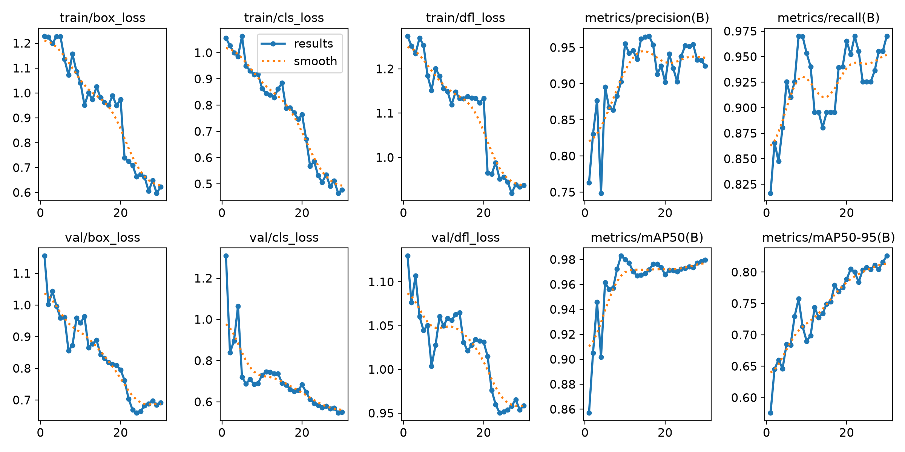
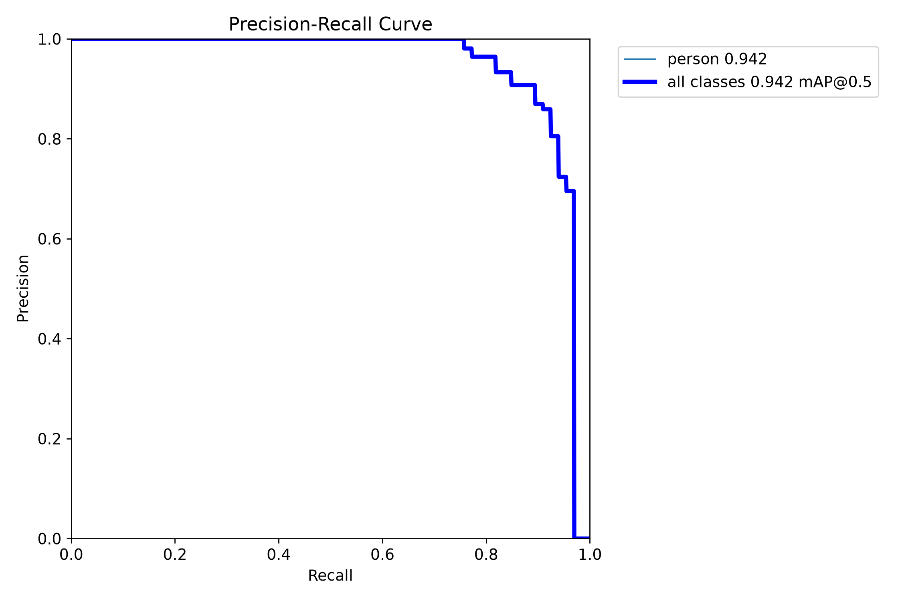
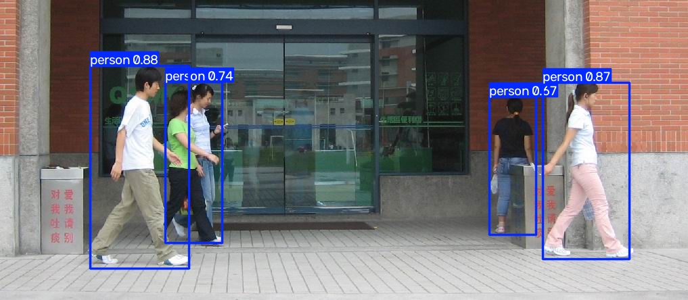
Split ngẫu nhiên theo ảnh, chưa kiểm tra đầy đủ cảnh/người gần giống giữa các tập. Kết quả chưa chứng minh tổng quát hóa ngoài dataset. Chưa thực hiện ReID. Ngưỡng dùng vẽ confusion matrix cần được đối chiếu riêng với P/R tổng hợp.